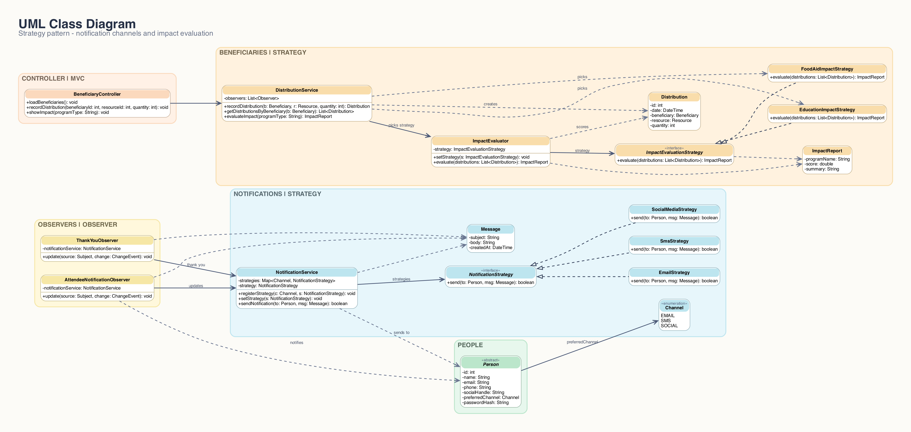
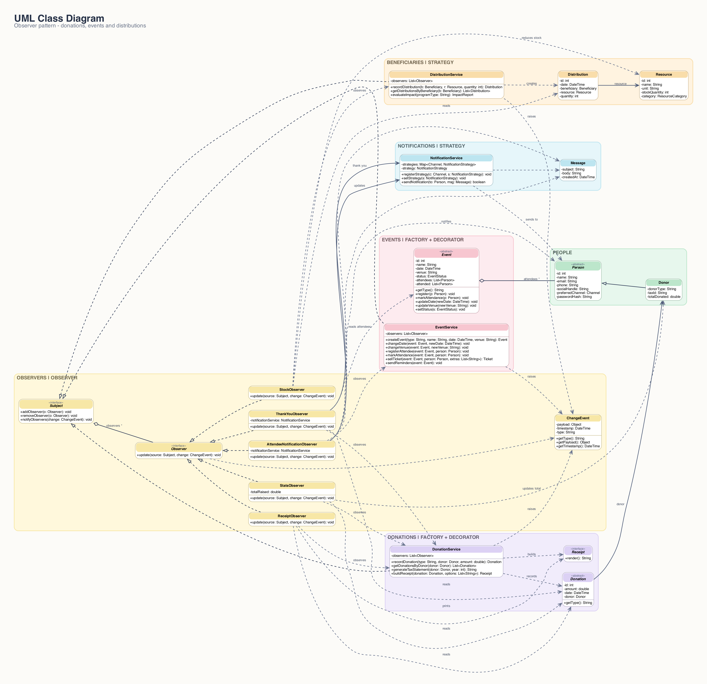
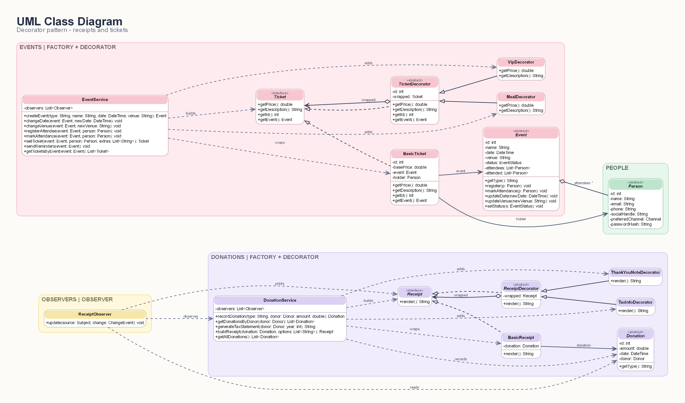
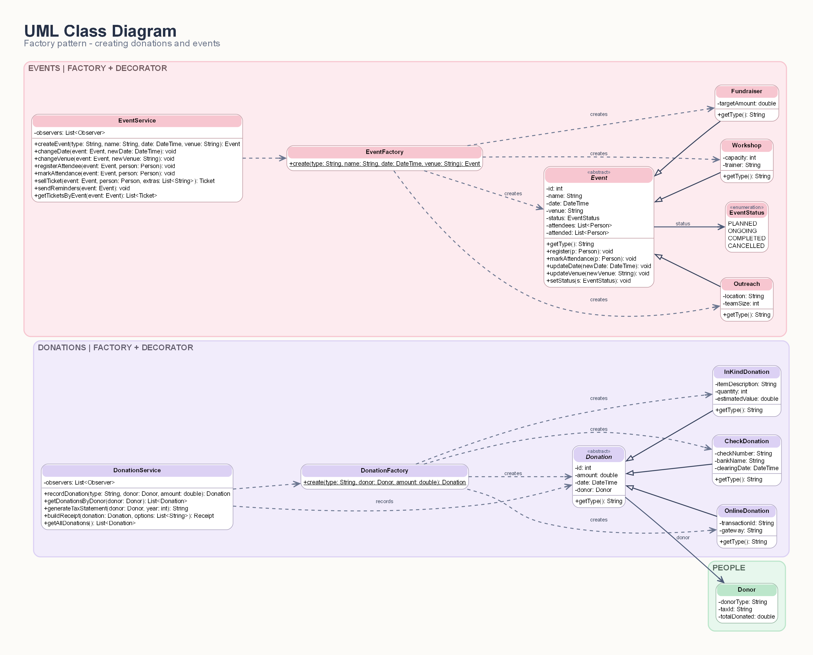
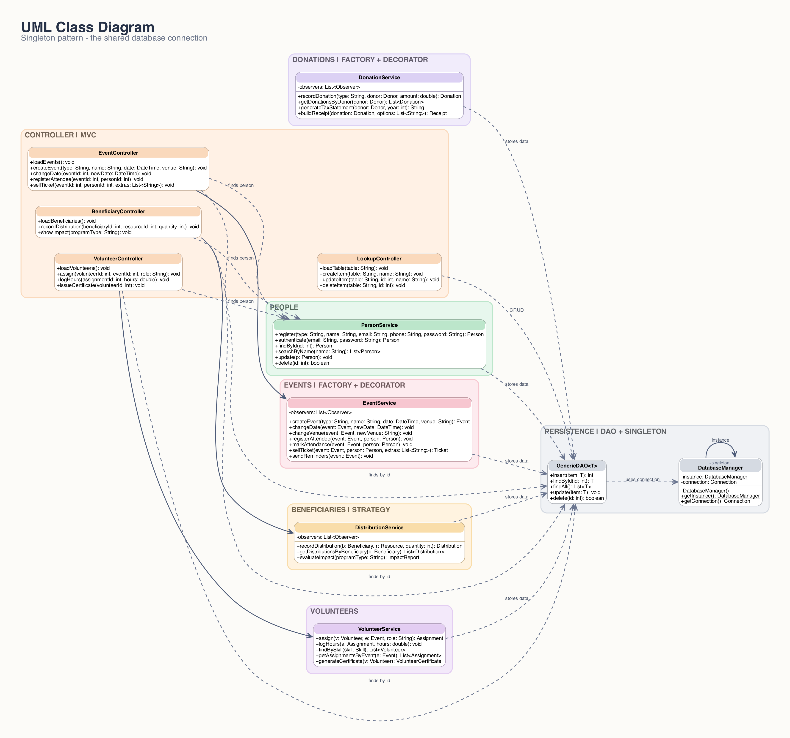
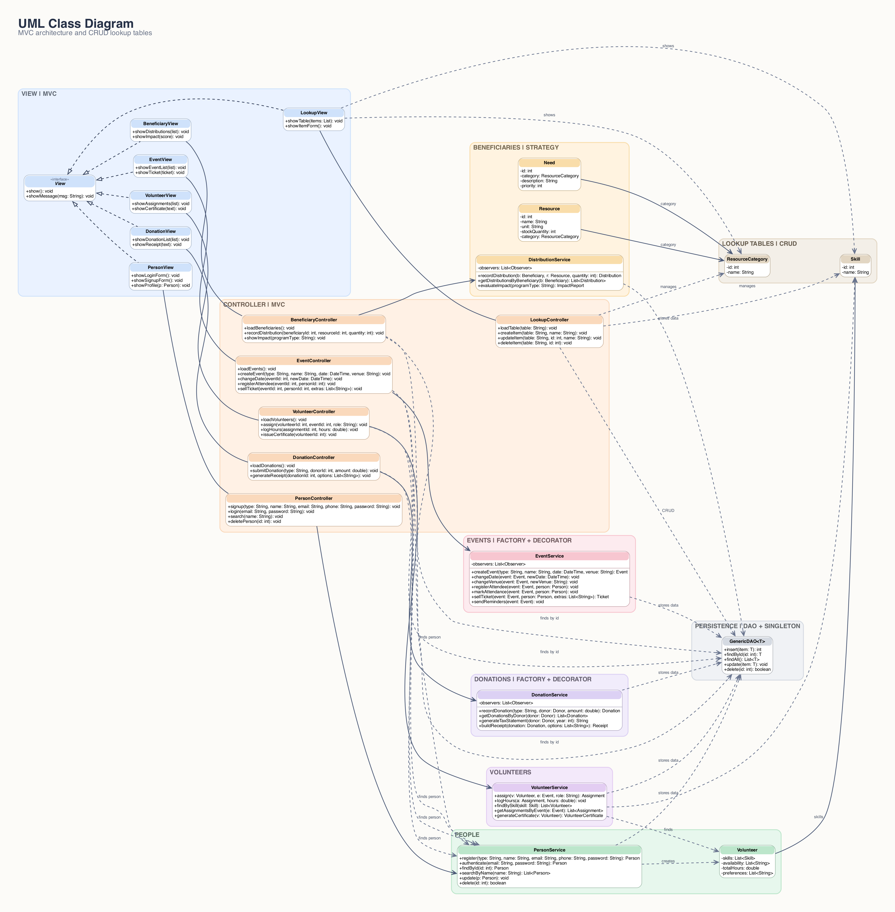

Figure 1: Full class diagram of the system
| Name | Student ID |
|---|---|
| Saifeldin Tamer ElSayes | 22P0233 |
| Mohamed Emad Eldeen | 22P0065 |
| Ahmed Khaled Hamdy | 22P0024 |
| Yousef Sameh Fathi | 22P0010 |
| Seif Eldeen Ibrahim | 22P0023 |
| Mohamed Khaled Mohamed Anwar | 22P0041 |
This Software Requirements Specification (SRS) describes Impact Hub, a management system for a non-profit organization. It defines what the system must do, the quality attributes it must have, and how its object-oriented design uses design patterns to stay flexible, maintainable and reusable.
The document is written for the course instructor and teaching assistants who evaluate the project, and for the six team members who build it. It covers Phase 1 of the CSE336 major task.
The class diagrams and the Java code described here are the same design: every class in the diagrams exists in the code with the same attributes, operations and relationships.
Impact Hub supports the daily work of a non-profit: managing people and accounts, receiving donations, organizing events and volunteers, supporting beneficiaries and communicating with all of them. The project is delivered in two phases:
Requirements that belong to Phase 2 are still listed in Section 3 so the design stays complete, and each one is marked with its phase.
| Term | Meaning |
|---|---|
| NPO | Non-profit organization |
| Donor | A person or company that gives money (online or by check) or goods (in-kind donation) |
| Volunteer | A person who gives their time at the organization's events |
| Beneficiary | A person, with their household, whom the organization supports |
| Assignment | A volunteer working at one event in a given role |
| Distribution | A quantity of a resource given to a beneficiary |
| Lookup table | A small reference table (skills, resource categories) that staff edit at runtime |
| CRUD | Create, Read, Update, Delete |
| DAO | Data Access Object - the class that stores and retrieves records |
| MVC | Model-View-Controller architecture |
| EGP | Egyptian Pound, the currency used for all amounts |
Section 2 describes the product and its users. Section 3 lists the functional requirements per module and Section 4 the client requirements that extend the basic brief. Section 5 gives the non-functional requirements. Section 6 presents the design: architecture, class diagrams, each design pattern, the lookup tables and the main design decisions. Section 7 shows how the work is divided in the team, Section 8 maps every Phase 1 grading item to the diagram and code that satisfies it, and Section 9 explains how to run the system.
Impact Hub is a new, self-contained desktop system. In Phase 1 it is a Java application with a basic JavaFX interface: a main menu opens one window per module. Its data is kept in a local SQLite database file (impacthub.db) that is filled with sample data on the first run, so every feature can be demonstrated immediately. Payments and message delivery are simulated: no real card gateway, bank, e-mail server or SMS provider is contacted, and every delivered message is printed in the terminal with its channel.
| Module | Main functions |
|---|---|
| People and accounts | Sign up as donor, volunteer or beneficiary; log in with a hashed password; search and delete people; each person has a preferred contact channel |
| Donation management | Record online, check and in-kind donations; list donations; issue receipts with optional tax information and thank-you note; thank donors automatically; produce yearly tax statements |
| Event management | Create fundraisers, workshops and outreach programs; register attendees; sell tickets with extras; reschedule events and notify attendees; track attendance and send reminders |
| Volunteer management | Store skills, availability and preferences; assign volunteers to events with a role; track hours; issue certificates |
| Beneficiary management | Store households and their needs, distribute resources from stock, evaluate the impact of programs |
| Communication | Notify people automatically through their preferred channel (e-mail, SMS or social media) |
| Administration | Maintain the lookup tables: volunteer skills and resource categories |
| User | Description |
|---|---|
| Administrator | Maintains the lookup tables |
| Staff member | Records donations and distributions, manages events and volunteer assignments |
| Donor | Gives money or goods, buys event tickets, receives receipts and thank-you messages |
| Volunteer | Gives time at events, receives event updates and certificates |
| Beneficiary | Receives support and updates about events that concern them |
Java 21 (JDK) built with Apache Maven, on Windows, Linux or macOS. Maven downloads JavaFX 21 and the SQLite JDBC driver, so nothing else has to be installed. The project opens directly in IntelliJ IDEA or NetBeans as a Maven project.
App, the JavaFX entry point that wires the objects together and opens the main menu.DatabaseManager Singleton) and one generic DAO.Each requirement has an identifier, a description and the phase in which it is delivered. "Phase 1 - service only" means the operation is implemented and working in the model, but the Phase 1 user interface has no button for it.
| ID | Requirement | Status |
|---|---|---|
| FR-P1 | The system shall let a person sign up as a donor, volunteer or beneficiary with name, e-mail, phone and password. | Phase 1 - implemented |
| FR-P2 | The system shall refuse a sign-up without a name, e-mail or password. | Phase 1 - implemented |
| FR-P3 | The system shall store only a SHA-256 hash of each password and log people in by e-mail and password. | Phase 1 - implemented |
| FR-P4 | The system shall let staff search people by name; an empty name lists everyone. | Phase 1 - implemented |
| FR-P5 | The system shall let staff delete a person by id. | Phase 1 - implemented |
| FR-P6 | The system shall keep each person's preferred contact channel (e-mail by default). | Phase 1 - implemented |
| FR-P7 | The system shall let a person edit their contact details and preferred channel from the interface. | Phase 2 |
| ID | Requirement | Status |
|---|---|---|
| FR-D1 | The system shall store donor details: donor type (individual or corporate), tax id and total donated. | Phase 1 - implemented |
| FR-D2 | The system shall record a donation of type online, check or in-kind for a donor with an amount. | Phase 1 - implemented |
| FR-D3 | The system shall reject a donation whose amount is not more than 0. | Phase 1 - implemented |
| FR-D4 | The system shall keep each type's own details: transaction id and gateway (online), check number, bank and clearing date (check), item description, quantity and estimated value (in-kind). | Phase 1 - implemented |
| FR-D5 | The system shall list all recorded donations. | Phase 1 - implemented |
| FR-D6 | The system shall issue a receipt for any recorded donation, with optional tax information and/or thank-you note, and print a receipt automatically when a donation is recorded. | Phase 1 - implemented |
| FR-D7 | The system shall keep each donor's total donated and the organization's total raised up to date. | Phase 1 - implemented |
| FR-D8 | The system shall produce a yearly donation statement for a donor's tax records. | Phase 1 - service only |
| FR-D9 | The system shall connect to a real payment gateway and bank clearing service. | Phase 2 |
| ID | Requirement | Status |
|---|---|---|
| FR-E1 | The system shall create fundraisers (target amount), workshops (capacity, trainer) and outreach programs (location, team size) with name, date and venue. | Phase 1 - implemented |
| FR-E2 | The system shall register people for an event and never register the same person twice. | Phase 1 - implemented |
| FR-E3 | The system shall sell tickets (100 EGP) with optional VIP seating (+150 EGP) and dinner (+40 EGP); the holder is registered for the event. | Phase 1 - implemented |
| FR-E4 | The system shall change an event's date and inform every attendee. | Phase 1 - implemented |
| FR-E5 | The system shall change an event's venue and send reminders, informing every attendee. | Phase 1 - service only |
| FR-E6 | The system shall mark the attendance of registered people. | Phase 1 - service only |
| FR-E7 | The system shall move events through their status (planned, ongoing, completed, cancelled) and enforce workshop capacity. | Phase 2 |
| ID | Requirement | Status |
|---|---|---|
| FR-V1 | The system shall store volunteers' skills (from the Skill lookup table), availability and preferences, and list them. | Phase 1 - implemented |
| FR-V2 | The system shall assign a volunteer to an event with a role and list the event's assignments. | Phase 1 - implemented |
| FR-V3 | The system shall track hours per assignment and per volunteer, refusing hours that are not more than 0. | Phase 1 - implemented |
| FR-V4 | The system shall issue a volunteer certificate with the total hours. | Phase 1 - implemented |
| FR-V5 | The system shall find the volunteers who have a given skill. | Phase 1 - service only |
| FR-V6 | The system shall let volunteers book their own shifts from a calendar. | Phase 2 |
| ID | Requirement | Status |
|---|---|---|
| FR-B1 | The system shall store beneficiaries with address, family size and a list of needs (category, description, priority), and list them with the resources in stock. | Phase 1 - implemented |
| FR-B2 | The system shall record the distribution of a resource to a beneficiary, refusing quantities above the stock. | Phase 1 - implemented |
| FR-B3 | The system shall reduce the stock automatically after each distribution. | Phase 1 - implemented |
| FR-B4 | The system shall evaluate the impact of a program with a method suited to that program (food aid or education). | Phase 1 - implemented |
| FR-B5 | The system shall add new resources and restock them from the interface. | Phase 2 |
| ID | Requirement | Status |
|---|---|---|
| FR-C1 | The system shall notify everyone concerned automatically when a donation is recorded or an event changes. | Phase 1 - implemented |
| FR-C2 | The system shall deliver each notification through the recipient's preferred channel - e-mail, SMS or social media - falling back to e-mail when needed. | Phase 1 - implemented |
| FR-C3 | The system shall send real e-mails and SMS messages and post on social-media pages. | Phase 2 |
| ID | Requirement | Status |
|---|---|---|
| FR-L1 | The administrator shall create, list, rename and delete volunteer skills. | Phase 1 - implemented |
| FR-L2 | The administrator shall create, list, rename and delete resource categories. | Phase 1 - implemented |
| FR-L3 | The system shall refuse to delete a lookup row that is still used by a volunteer, resource or need. | Phase 2 |
The brief lists the basic modules. The requirements below extend it with what the organization's staff, donors, volunteers and beneficiaries need on top of those modules. Each one is implemented in Phase 1 and traced to the classes that satisfy it.
| ID | Client requirement | Satisfied by |
|---|---|---|
| CR-01 | Every person chooses how they want to be contacted - e-mail, SMS or social media - and messages arrive through that channel. | Strategy: NotificationService + Email/Sms/SocialMediaStrategy |
| CR-02 | Every donor is thanked automatically right after donating. | Observer: ThankYouObserver |
| CR-03 | A receipt is printed for every donation without staff asking for it. | Observer: ReceiptObserver |
| CR-04 | A donor decides whether the receipt includes tax information and a thank-you note. | Decorator: TaxInfoDecorator, ThankYouNoteDecorator |
| CR-05 | Each donor's running total and the organization's total raised are always up to date. | Observer: StatsObserver |
| CR-06 | Event tickets can include VIP seating and dinner in any combination. | Decorator: VipDecorator, MealDecorator |
| CR-07 | Attendees hear about date changes without staff contacting each one. | Observer: AttendeeNotificationObserver |
| CR-08 | Nobody can be registered twice for the same event. | Event.register() |
| CR-09 | Distributions can never exceed the stock, and the stock is reduced automatically. | DistributionService, Observer: StockObserver |
| CR-10 | Food aid is measured by the number of people fed; education by how well distributions match recorded needs. | Strategy: FoodAid/EducationImpactStrategy |
| CR-11 | Admins add, rename and remove skills and resource categories without a developer. | CRUD: GenericDAO, LookupController |
| CR-12 | Passwords are stored only as hashes. | PersonService (SHA-256) |
| CR-13 | Data is kept when the application is closed and opened again. | Singleton: DatabaseManager + GenericDAO (SQLite) |
| ID | Quality | Requirement |
|---|---|---|
| NFR-1 | Maintainability | Each class has one responsibility and depends on interfaces or abstract classes where behaviour varies, so a change is made in one place. |
| NFR-2 | Extensibility (open/closed) | A new delivery channel, impact measure, receipt section, ticket extra or observer is added by writing one new class, without editing existing ones; a new donation or event type is one new class and one line in its factory. |
| NFR-3 | Usability | Each window shows the result of every action in its output area; every invalid entry (non-number, bad date, unknown id) shows a clear message instead of crashing. |
| NFR-4 | Data consistency | All services and controllers share one database connection (Singleton) and the same service objects, so every window sees the same data. |
| NFR-5 | Data integrity | Invalid donations, hours and distributions are rejected; stock cannot go below zero; a person cannot be registered twice for an event. |
| NFR-6 | Security | Passwords are stored as SHA-256 hashes. |
| NFR-7 | Persistence | Data is stored in a local SQLite file and survives restarts; deleting the file restores the sample data. |
| NFR-8 | Portability | Runs on any operating system with Java 21 and Maven; no external services or database server are required. |
| NFR-9 | Performance | Every operation completes instantly for the expected data size (hundreds of records). |
The code is organized in three layers. The user only talks to a View; the Controller receives the user's actions from its view, calls the Model (services and domain classes) and sends the results back to the view.
| Layer | Classes and packages (impacthub.*) | Responsibility |
|---|---|---|
| Model | persistence, people, lookup, notification (+ channels), observer, donation (+ receipt), event (+ ticket), volunteer, beneficiary - the services, domain classes and the data store | Business data and rules: services, domain classes, patterns and storage. |
| View | View (interface) and PersonView, DonationView, EventView, VolunteerView, BeneficiaryView, LookupView | The JavaFX windows: read the user's input and display results. Each view creates and talks only to its own controller (1 to 1). |
| Controller | PersonController, DonationController, EventController, VolunteerController, BeneficiaryController, LookupController | One controller per window: validates the input, calls the services and tells the view what to show. |
| Entry point | impacthub.App | Creates the services, plugs in the notification strategies, subscribes the observers, adds the sample data and opens the main menu. |
Each view and controller sits in the package of the module it serves (for example donation.DonationView), so one team member owns a whole vertical slice; the layer of a class is given by its role, not its package.
The class design was checked against the course's list of common class-diagram mistakes:
| Rule | How the design meets it |
|---|---|
| No empty classes | All 72 classes have attributes or operations; enumerations list their values. |
| No standalone classes | Every class, including each enumeration, takes part in at least one of the 145 relationships. |
| No inheritance cycles | All hierarchies are trees. |
| No single inheritance | Every parent has at least two children and every interface at least two implementations, e.g. Person (3), Donation (3), Event (3), Receipt (2), ReceiptDecorator (2), Ticket (2), TicketDecorator (2), View (6), Observer (5), Subject (3), NotificationStrategy (3), ImpactEvaluationStrategy (2). |
| Use interfaces | Subject, Observer, NotificationStrategy, ImpactEvaluationStrategy, Receipt, Ticket and View are interfaces; clients depend on them rather than on concrete classes. |
| Balanced relationships | The diagrams use association, aggregation, composition, generalization, realization and dependency. |
| No system class | There is no all-knowing "System" class; work is split across focused services, controllers and domain classes. |
| Diagram matches code | Every diagram class exists in the code with the same kind, attributes and operations, and every relationship is present in the code (the "observes" links are the subscriptions that App makes with addObserver()). This was checked automatically against the source. |
Seven diagrams are provided: the full system and one focused view per Phase 1 grading item. All of them are generated from one Mermaid model of the code (docs/class-diagram/NGO_UML_class_diagram.mmd) and drawn with Graphviz, so they always agree with each other and with the implementation. High-resolution PNG and SVG copies and the source are in the docs/class-diagram folder.
Notation: + public, - private; underlined members are static; italic names are abstract classes or interfaces; filled diamond = composition, hollow diamond = aggregation, solid arrow = association, dashed arrow = dependency, hollow triangle = generalization (solid) or realization (dashed).
| Figure | Diagram | Phase 1 grading item |
|---|---|---|
| Figure 1 | Full class diagram - all 72 classes, interfaces and enumerations with their 145 relationships | Class diagram |
| Figure 2 | Notification channel and impact evaluation | Strategy pattern |
| Figure 3 | Donation, event and distribution notifications | Observer pattern |
| Figure 4 | Receipts and tickets | Decorator pattern |
| Figure 5 | Creating donations and events | Factory pattern |
| Figure 6 | The shared database connection | Singleton pattern |
| Figure 7 | Application layers and lookup tables | MVC and CRUD lookup tables |






Problem. Some behaviours have several interchangeable variants: how a message is delivered and how a program's impact is measured. An if/else on the variant would have to be edited every time a variant is added, breaking the open/closed principle.
Solution. Each variant is a class behind a common interface, and a context object holds a reference to one strategy and delegates to it. The pattern is applied twice:
| Use | Strategy interface | Concrete strategies | Context (how the strategy is chosen) |
|---|---|---|---|
| Communication channel | NotificationStrategy | EmailStrategy, SmsStrategy, SocialMediaStrategy | NotificationService - registerStrategy() maps each Channel to a strategy; the recipient's preferredChannel picks it, and setStrategy() sets the default (e-mail) |
| Impact evaluation | ImpactEvaluationStrategy | FoodAidImpactStrategy, EducationImpactStrategy | ImpactEvaluator - setStrategy(); DistributionService picks the strategy for the program type chosen in BeneficiaryController |
// NotificationService (Context)
public boolean sendNotification(Person to, Message msg) {
NotificationStrategy chosen = strategy; // default strategy
Channel preferred = to.getPreferredChannel();
if (preferred != null && strategies.containsKey(preferred)) {
chosen = strategies.get(preferred); // recipient's channel
}
return chosen != null && chosen.send(to, msg);
}
Benefit. A WhatsApp channel or a health-program impact measure is one new class plus one registration line; the contexts do not change.
Problem. When a donation is recorded, an event changes or resources are distributed, several independent reactions must follow (receipt, thank-you, totals, attendee messages, stock). If the services called each reaction directly they would be tightly coupled to all of them.
Solution. DonationService, EventService and DistributionService implement Subject and keep a list of Observers. Every state change creates a ChangeEvent (type, payload, timestamp) and calls notifyObservers(change), which calls update(source, change) on each observer. App subscribes the observers when the application starts.
| Role | Class | In the code |
|---|---|---|
| Subject | Subject (interface) | addObserver(), removeObserver(), notifyObservers(change) |
| Observer | Observer (interface) | update(source, change) |
| Concrete subjects | DonationService, EventService, DistributionService | recordDonation(); changeDate(), changeVenue(), sendReminders(); recordDistribution() |
| Concrete observers | ReceiptObserver, ThankYouObserver, StatsObserver | Print the receipt; thank the donor; update the donor's and the organization's totals |
| Concrete observers | AttendeeNotificationObserver, StockObserver | Message every attendee; reduce the resource's stock |
// DonationService (Concrete Subject)
public Donation recordDonation(String type, Donor donor, double amount) {
if (amount <= 0) {
throw new IllegalArgumentException("The amount must be more than 0.");
}
Donation donation = DonationFactory.create(type, donor, amount);
donations.insert(donation);
notifyObservers(new ChangeEvent("DONATION_RECORDED", donation));
people.update(donation.getDonor()); // save the new total set by StatsObserver
return donation;
}
Benefit. Subjects only know the Observer interface, so a new reaction (for example a Phase 2 activity log or dashboard) is one new observer; the services do not change.
Problem. Receipts and tickets need optional extras in any combination. A subclass for every combination would cause a class explosion.
Solution. Each family has a component interface, a plain concrete component and an abstract decorator that is a component and wraps one (wrapped). Concrete decorators return the wrapped result plus their own part.
| Family | Component | Concrete component | Decorator | Concrete decorators |
|---|---|---|---|---|
| Receipts | Receipt (render()) | BasicReceipt | ReceiptDecorator | TaxInfoDecorator, ThankYouNoteDecorator |
| Tickets | Ticket (getPrice(), getDescription()) | BasicTicket (100 EGP) | TicketDecorator | VipDecorator (+150 EGP), MealDecorator (+40 EGP) |
// DonationService.buildReceipt()
Receipt receipt = new BasicReceipt(donation);
if (options.contains("TAX")) {
receipt = new TaxInfoDecorator(receipt);
}
if (options.contains("THANK_YOU")) {
receipt = new ThankYouNoteDecorator(receipt);
}
return receipt;
Benefit. With n decorators and m components only n + m classes are needed, and new extras (for example a signature) are one new class.
Problem. The user picks the kind of donation (online, check, in-kind) and the kind of event (fundraiser, workshop, outreach) at runtime. If the services created them with new they would depend on every concrete class and repeat the choice in several places.
Solution. A factory class with a static create(type, ...) method is the one place that turns the user's choice into the right concrete object; the services only work with the abstract product.
| Role | Donations | Events |
|---|---|---|
| Factory | DonationFactory.create(type, donor, amount) | EventFactory.create(type, name, date, venue) |
| Client | DonationService.recordDonation() | EventService.createEvent() |
| Product | Donation (abstract) | Event (abstract) |
| Concrete products | OnlineDonation, CheckDonation, InKindDonation | Fundraiser, Workshop, Outreach |
public class DonationFactory {
public static Donation create(String type, Donor donor, double amount) {
return switch (type) {
case "Online" -> new OnlineDonation(donor, amount);
case "Check" -> new CheckDonation(donor, amount);
case "InKind" -> new InKindDonation(donor, amount);
default -> throw new IllegalArgumentException("Unknown donation type: " + type);
};
}
}
Benefit. The services never name a concrete donation or event class; a new type is one new product class and one line in its factory.
Problem. Every service and controller must work on the same data. Several database connections would waste resources and could see different data.
Solution. DatabaseManager has a private constructor, a static instance and a static synchronized getInstance() that creates the instance on first use (lazy initialization) and returns the same object afterwards. It holds the one JDBC connection, which every GenericDAO<T> uses.
private static DatabaseManager instance;
private final Connection connection;
private DatabaseManager() { ... connection = DriverManager.getConnection(url); }
public static synchronized DatabaseManager getInstance() {
if (instance == null) {
instance = new DatabaseManager();
}
return instance;
}
Benefit. One global access point for data; the database file could be replaced by a database server in Phase 2 by changing only this class.
Reference values that change over time are not hard-coded. They are rows of lookup tables that the administrator maintains from the "Lookup tables" window.
| Lookup table | Row class | Used by | Sample rows |
|---|---|---|---|
| Volunteer skills | Skill | Volunteer.skills, VolunteerService.findBySkill() | First aid, Teaching, Cooking |
| Resource categories | ResourceCategory | Resource.category, Need.category, impact evaluation | Food, Education |
Both are stored with the generic GenericDAO<T>, which provides insert(), findById(), findAll(), update() and delete() for any class with an id. LookupController offers loadTable(), createItem(), updateItem() and deleteItem() for either table, and LookupView shows the rows.
| Option considered | Chosen design | Reason |
|---|---|---|
| Factory Method (one creator class per product) | Simple factories DonationFactory and EventFactory with create(type) | The brief asks for objects "of different types based on user input"; one small factory per family meets it with the fewest classes. |
| A separate DAO class for every table | One GenericDAO<T> that stores each object in a table named after its class | All tables get the same five CRUD operations with no extra classes; adding a new kind of record needs no new data-access code. |
| Data kept only in memory | SQLite file behind the DatabaseManager Singleton | Data survives restarts and the diagram's JDBC Connection is real; SQLite needs no server. |
| Console menus | Basic JavaFX windows, one per module | Each module is shown and tested on its own window with plain forms; the look is deliberately simple. |
| Categories stored as plain Strings | Lookup tables Skill and ResourceCategory | Editable at runtime (CRUD) without changing code. |
| Real e-mail and SMS providers | Channel strategies that print the message | Phase 1 needs no external accounts; real providers can replace the strategies in Phase 2 without changing NotificationService. |
Each member owns a vertical slice of the system and the pattern used in it. Every one of the 72 classes is assigned to exactly one member; the history of the GitHub repository shows each member's commits.
| Member | ID | Area | Patterns | Classes |
|---|---|---|---|---|
| Saifeldin Tamer ElSayes @saifeldinsais | 22P0233 | Foundation, people and lookup tables: persistence, people, lookup | Singleton, CRUD lookup tables, MVC | DatabaseManager, GenericDAO, View, Person, Donor, Volunteer, Beneficiary, Skill, PersonService, PersonView, PersonController, ResourceCategory, LookupView, LookupController (and the App entry point) |
| Ahmed Khaled Hamdy @ahmed-khaled04 | 22P0024 | Observer and notification core: observer, notification | Observer, Strategy (context) | Subject, Observer, ChangeEvent, ReceiptObserver, ThankYouObserver, StatsObserver, AttendeeNotificationObserver, StockObserver, NotificationService, NotificationStrategy, Channel, Message |
| Mohamed Emad Eldeen @Mohamed-Dahy | 22P0065 | Donations and notification channels: donation, notification.channels | Factory, Strategy, Observer (subject) | DonationService, DonationFactory, Donation, OnlineDonation, CheckDonation, InKindDonation, DonationView, DonationController, EmailStrategy, SmsStrategy, SocialMediaStrategy |
| Seif Eldeen Ibrahim @seif-elden | 22P0023 | Events and volunteer logic: event, volunteer | Factory, Observer (subject) | EventService, EventFactory, Event, Fundraiser, Workshop, Outreach, EventStatus, EventView, EventController, VolunteerService, Assignment, VolunteerController |
| Yousef Sameh Fathi @YoussifSameh2004 | 22P0010 | Decorators and volunteer output: donation.receipt, event.ticket, volunteer | Decorator | Receipt, BasicReceipt, ReceiptDecorator, TaxInfoDecorator, ThankYouNoteDecorator, Ticket, BasicTicket, TicketDecorator, VipDecorator, MealDecorator, VolunteerView, VolunteerCertificate |
| Mohamed Khaled Mohamed Anwar @tob-git | 22P0041 | Beneficiaries and impact evaluation: beneficiary | Strategy, Observer (subject) | DistributionService, Distribution, Resource, Need, ImpactEvaluator, ImpactEvaluationStrategy, FoodAidImpactStrategy, EducationImpactStrategy, ImpactReport, BeneficiaryView, BeneficiaryController |
| Grading item | Marks | Diagram | Classes | Source location |
|---|---|---|---|---|
| Class diagram | 1 | Figure 1 (and all figures) | All 72 classes, interfaces and enumerations | docs/class-diagram/ |
| Strategy pattern | 0.5 | Figure 2 | NotificationStrategy, ImpactEvaluationStrategy and their concrete strategies; NotificationService, ImpactEvaluator | notification, notification/channels, beneficiary |
| Observer pattern | 0.5 | Figure 3 | Subject, Observer, ChangeEvent; DonationService, EventService, DistributionService; 5 concrete observers | observer and the three services |
| Decorator pattern | 0.5 | Figure 4 | Receipt + ReceiptDecorator family; Ticket + TicketDecorator family | donation/receipt, event/ticket |
| Factory pattern | 0.5 | Figure 5 | DonationFactory and EventFactory with their products | donation, event |
| Singleton pattern | 0.5 | Figure 6 | DatabaseManager (with GenericDAO) | persistence |
| MVC | 0.5 | Figure 7 | View and 6 views, 6 controllers, App | *View, *Controller in each module; App |
| Client requirements | 0.5 | - | Section 4 (CR-01 to CR-13) | - |
| CRUD lookup tables | 0.5 | Figure 7 | Skill, ResourceCategory, GenericDAO, LookupController, LookupView | lookup, people, persistence |
Source paths are relative to src/main/java/impacthub/.
From the project folder (requires JDK 21 and Maven):
mvn javafx:run # start the application mvn test # run the unit tests (they use target/test.db, never impacthub.db)
Alternatively, open the folder as a Maven project in IntelliJ IDEA and run impacthub.App. Notifications and receipts are printed in the terminal (or the IDE's run console). Delete impacthub.db to start again with fresh sample data.
The database is filled with sample data on the first run (every sample account's password is 1234). Each kind of record has its own table, so ids start at 1 in each table:
| Ids | Records |
|---|---|
| Skills 1 - 3 | First aid, Teaching, Cooking |
| Resource categories 1 - 2 | Food, Education |
| Resources 1 - 2 | Rice bag (Food, 200 bags), School kit (Education, 100 kits) |
| People 1 - 2 | Donors: Sara Ali (individual, e-mail, sara@mail.com), Omar Co. (corporate, SMS, omar@mail.com) |
| People 3 - 4 | Volunteers: Ali Hassan (First aid; weekends; prefers outreach; e-mail), Mona Adel (Teaching; evenings; prefers workshops; social media) |
| People 5 - 6 | Beneficiaries: Fatma Said (Cairo, family of 5, needs food), Hassan Omar (Giza, family of 3, needs school supplies) |
| Events 1 - 2 | Charity Gala (fundraiser, in 2 weeks, Grand Hall), First Aid Training (workshop, in 1 week, Community Center) |